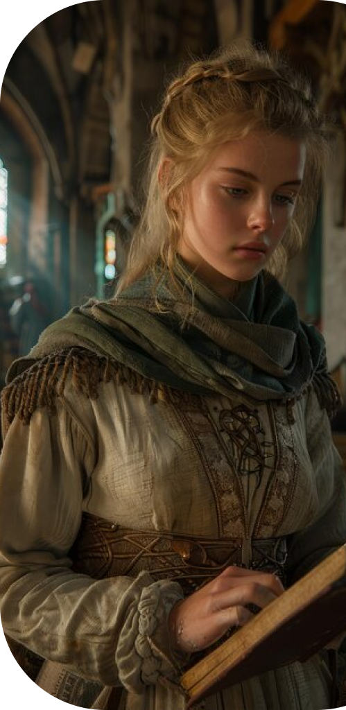

Мода
В этой эпохе одежда поражает своим разнообразием. Хоть бедные сословия не отличались богатсвом выбора, в обиходе были грубые ткани, чаще всего непокрашенные. Богатые одежды имели много фасонов, красились в яркие цвета и дополнялись украшениями, например брошками. Были и странные для современного человека тренды: накладной беременный живот, выбритые брови, почерненные зубы.